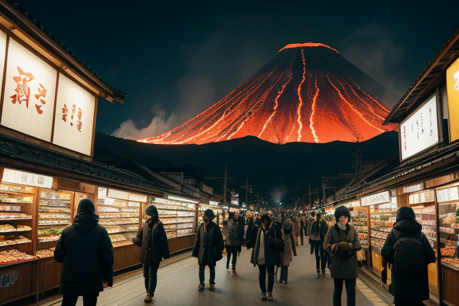
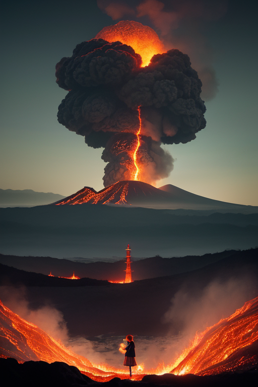
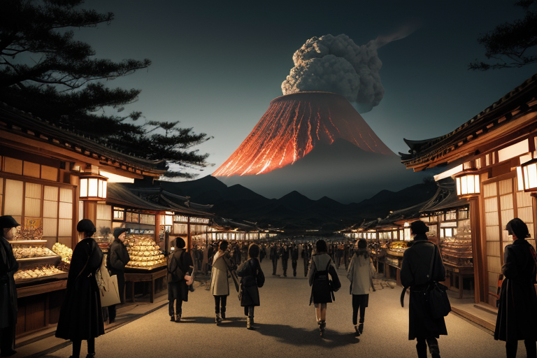
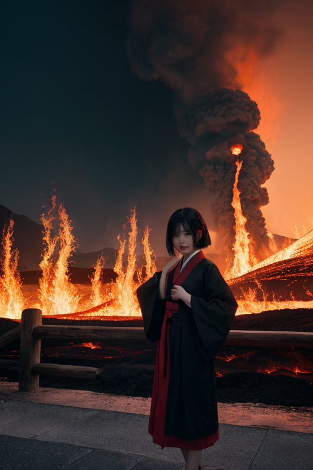

第一章 現実の鹿児島
あなたはまだ気づいていない。この土地にも、王がいることを。
鹿児島中央駅近くのアーケードは、朝から活気に満ちていた。観光客がさつまあげの試食に列を作り、地元の主婦が黒豚の脂の乗りを確かめ、焼酎の瓶が木箱に詰められて運ばれていく。金の流れは、人の体温のようにこの街を温めていた。その喧噪の一角、老舗の乾物店の軒先に、一人の青年が寄りかかっていた。革ジャンに身を包み、目は常に遠くの桜島を捉えている。彼がサツマリア・リボルト、この地に遣わされた王である。
彼の耳には、主席妖精リボルナの声が届く。「地熱、安定範囲内。だが、黒商圏の『歪み』は増大中。欲望の熱量が、地盤を緩ませる」。彼は答えない。ただ、通りを埋める人々の、明日を求める切実な眼差しを見つめる。商いの活気は創造のエネルギーだが、過剰な欲望は確かに土地を蝕む。変革の名の下、何を守り、何を壊すべきか。彼の胸中には、薩摩が明治という大変革を引き起こした覚悟の重みが、静かに沈殿していた。

第二章 歪みの兆候
仙巌園から望む錦江湾は、今日も観光船が行き交う。しかし、リボルナの報告は確かだった。鹿児島市街を流れる金と情報の熱量が、地盤の微細なひずみを増幅させている。特定の地域で、地下水脈の温度がわずかに上昇し、コンクリートの継ぎ目に、目に見えない圧力がかかり始めていた。
「活気と歪みは表裏一体だな」とサツマリアは呟く。繁華街の喧噪は、かつて集成館で近代化に挑んだ薩摩の熱気に似ている。だが、西南戦争が示したように、変革の熱は自らをも焼く炎となり得る。彼は人々の足元を流れる「欲望」の地脈を感じ取る。一夜の富を夢見る投機の熱、生き残りをかけた企業の焦り――それらが無自覚に蓄積するストレスは、地熱の均衡を微妙に乱す。
彼は指を鳴らした。次の瞬間、霧島神宮の森深くで、一本の古木がかすかに揺れた。妖精サクラジマナが、地中に拡がりすぎた人間の熱を、静かな森の呼吸へと分散させたのだ。破壊ではない。熱の流れを、ほんの少しだけ迂回させる創造的な調整。革命王の仕事は、爆発を起こすことではなく、爆発が起きない水位を保つことにある。

第三章 王の葛藤
仙巌園の借景に、桜島は今日も静かに煙を吐いていた。観光客の笑い声、カメラのシャッター音。その背後で、リボルナが低く唸った。「また、あの場所の歪みが増している。知覧だ」。王は目を閉じ、特攻平和会館に漂う、鎮魂と共に増幅するある種の熱を感じた。それは単なる哀悼ではない。時に「あの戦いさえなければ」という仮定が、過去への鋭い刃となり、現在の地層を歪ませる。
「介入すべきか」。彼は自問した。革命とは、過去を断ち切ることか。それとも、その重みを別の形で継承することか。西南戦争の記憶が薩摩の地に刻んだように、破壊と創造は表裏一体だ。彼は指を動かさなかった。まず、感じる必要があった。若者たちの覚悟、その先に広がった空白、そして今を生きる人々がその空白に注ぐ、複雑な想い。それら全てが、この土地の感情の密度を形作っていた。
彼はため息をついた。感情を持つことは、判断を鈍らせる。しかし、感情を無視した調整は、より大きな歪みを生む。革命王の仕事は、熱を消すことではなく、その熱が自壊しない方向へ、ほんの少し導くことだ。彼はリボルナに微かな指示を送った。会館の庭の一枚の葉が、風でもないのに揺れた。鋭すぎる刃先の感情を、そっと包み込むように。それは破壊ではなく、記憶を守るための、静かな創造の一歩だった。

第四章 妖精との対話
仙巌園の借景に、桜島の噴煙がゆるやかに流れる。観光客のざわめきの奥で、リボルナは語った。「商いとは、物の流れではない。欲望と覚悟の交換だ」。彼女は、薩摩焼の窯元が火加減を見つめる目、港で黒豚を競り落とす男の拳、夜の酒場で交わされる密約を、すべて地熱の揺らぎとして感じていた。歪みは、金の流れが一極に淀む時、人の熱が冷め切る時、静かに発生する。
「革命とは、すべてを焼き尽くすことか？」サツマリアが問う。リボルナは首を振る。「違う。この地熱を、自らを燃やさない持続可能な炎に変えること。維新も、戦いも、その後の商いも、すべては熱の形を変えただけだ」。彼女は、観光バスの排気ガスが作り出す微かな歪みを、そっと分散させた。破壊は創造の一断面に過ぎない。彼らの仕事は、熱が暴走する寸前で、ほんの少し軌道を修正すること。
第五章 微調整と余韻
仙巌園の庭を、修学旅行生の群れがざわめきながら進んでいく。その足元、石畳のわずかな段差。一人の生徒がつまずきかけた瞬間、サツマリアが指をわずかに動かす。生徒はよろめきながらも、隣の友達の肩に手を掛けて踏みとどまる。転倒という小さな災いは、軽い笑い話に変わった。彼は革命を叫ばない。ただ、熱が一点に集中して爆発する前に、それをかすかに分散させる。
観光バスが次々と到着し、人々は鹿児島の歴史と美食を消費していく。黒豚の脂の滴る音、焼酎のグラスが触れ合う音。その活気の底で、地熱の流れは絶えず蠢いている。リボルナは、桜島の火山性ガスの放出を、今日も0.01％抑制した。大噴火を防ぐためではなく、明日も人々が「あの山、今日も煙ってるね」と日常を語り合えるために。
変革とは、地続きの微調整の連続だ。維新も、戦いも、その後の繁栄も、すべては膨大な「少しずつ」の積み重なりでしかない。破壊と創造は表裏一体。彼らはその境界線に立ち、針路をほんの少しだけ、人の手の届く方へと修正し続ける。
あなたの町にも、王がいる。